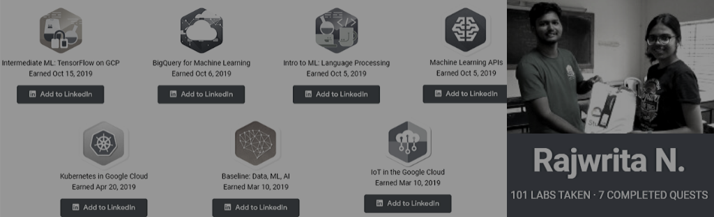
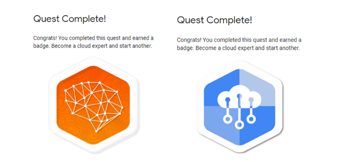
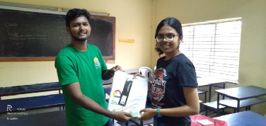
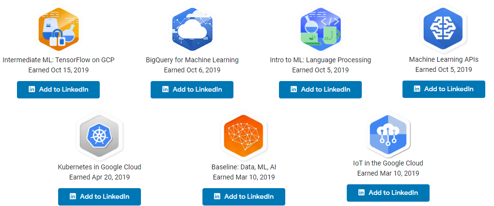
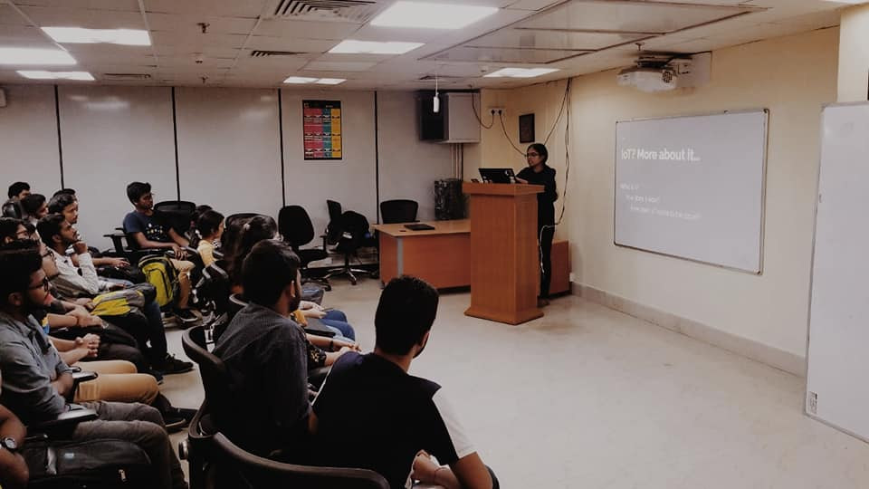

As any other first year student, I look forward to the various kinds of workshops that are taking place here and there in order to gain new knowledge or in fact discover new spheres of interest. The workshop that I attended on the 23rd of February was definitely one of the most thought-provoking and captivating workshops that seemed to so efficiently spark my interest into the yet unexplored by me, world of Google Cloud Training. The first session was conducted by Mrs. Sumitra Bagchi on “The Essentials of GCP for ML/AI”. We mainly learned the preliminary procedures on how to get accustomed with the quests on Qwiklabs. With the fast paced growth of Machine Learning in tech, i feel that this exposure to the different detailed labs which was provided to us will definitely prove to be very helpful.
The next comprehensive session was taken by the DSC NSEC Lead Anubhav Singh, on the various concepts of IoT, again a very in-demand field of tech. It is’nt everyday that we get to discover and explore so much about a definite yet broad field of interest and i feel extremely privileged and honored to be a part of this workshop.
Taking back home my experience from the day I started working on the two quests: Baseline: Data, ML, AI and IoT in the Google Cloud.

The quests were a great amalgamation of fun as well as cognition. I look forward to doing more such quests in the future. A special thanks to DSC NSEC for conducting such workshops.
I have also received a t-shirt For participating in the cloud study jam and completing the quests!

Continuing my journey on the Google Cloud Platform, I later completed a ton of other quests and became the Quest Leader. It has been a very interesting and informative journey!

This is my Qwiklab public profile!
I have also taken a session on Iot in the Google Cloud in a WTM meetup. The link to my slides!

10-03-2019